Technical Stuff
Things I have done and learnt through my journey. The nitty gritty that takes time and effort.
Controls
Most of this came from three CMU courses: Robot Dynamics & Analysis, Modern Control Theory, and Optimal Control & Reinforcement Learning. I've written forward kinematics and Jacobians from scratch using screw theory, tuned PID and LQR controllers, planned paths with A*, built an EKF SLAM, and used iLQR and a small neural network policy to balance a two-wheeled inverted pendulum. Most of it was simulated in Webots, MATLAB or Python.
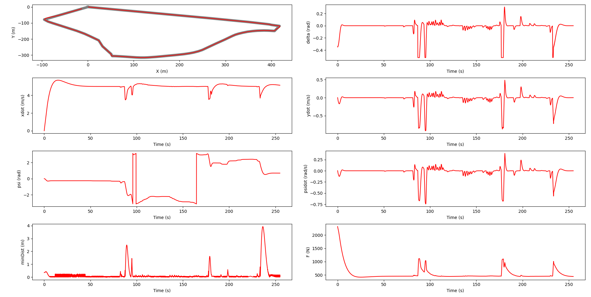
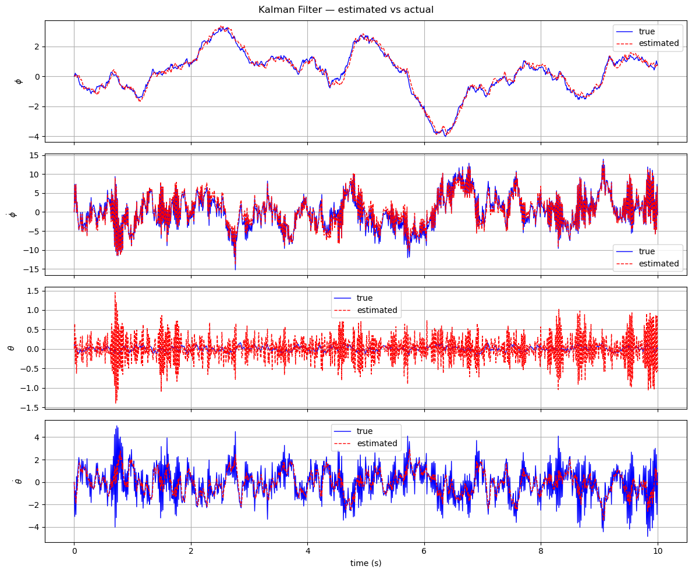
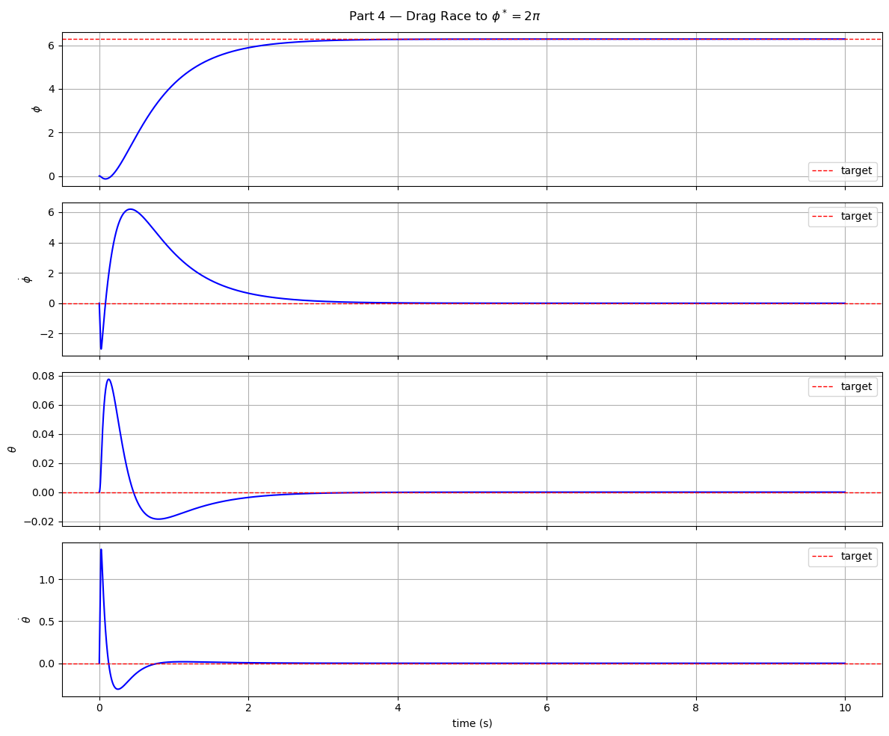
Machine Learning & AI
Two CMU courses back to back: Machine Learning & AI for Engineers, then Intro to Deep Learning. I started with the classics, logistic regression, SVMs (solving the optimization myself with cvxopt instead of calling a library), decision trees and random forests. Then sequence models like LSTMs and GRUs, and finally transformers, masked autoencoders and VAEs in PyTorch, applied to physics and engineering data.
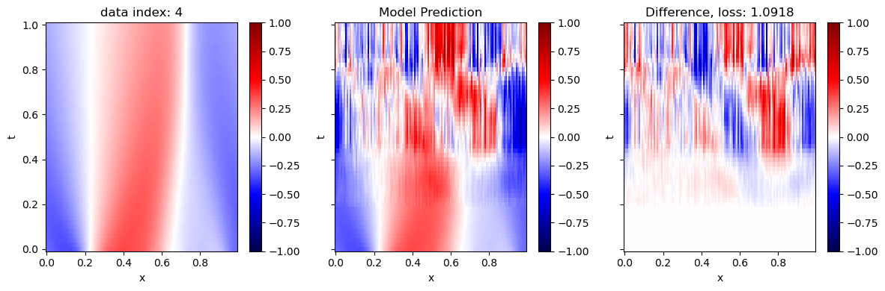
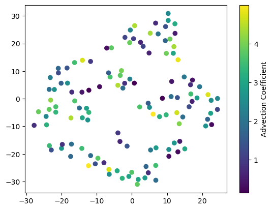
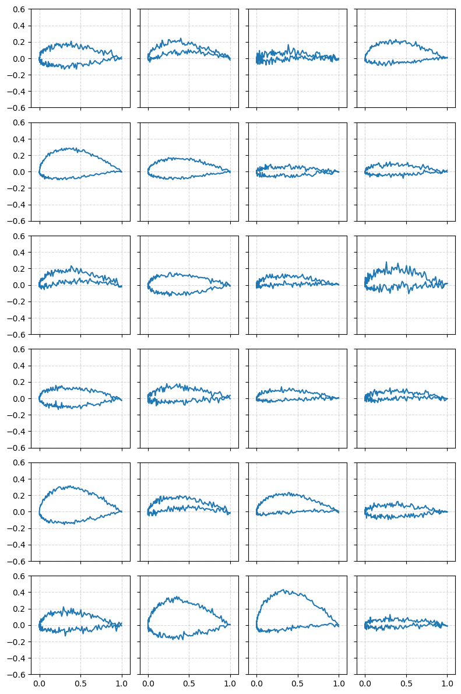
Regulatory & Biomedical
From my biomedical engineering degree at Rowan. In FEA I built a 2D solver in MATLAB (BristolFE) and used SolidWorks Simulation to check hip implant fatigue against ISO 7206. In a medical device regulatory bootcamp we ran a mock company taking a hip implant through an FDA 510(k): SOPs, design history file, CAPA forms, an ISO 13485 audit and ISO 14971 risk management. Biomechanics covered gait, ground reaction forces and inverse dynamics. On the research side, I did the risk analysis and standards research for the exoskeleton project.
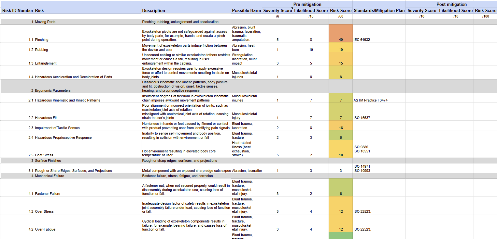
Sensors & Digital Signal Processing
This came out of my research: getting a WitMotion HWT906 IMU to stream cleanly into a Raspberry Pi, and then into an error-state Kalman filter (ESKF) that tracks the foot. Most of the work wasn't the filter math, it was making sure the data going in was actually good. Roughly in the order I did it:
1. Characterize the sensor
Before trusting any reading, I recorded the IMU sitting still to measure its noise. Those numbers set the filter's noise values.
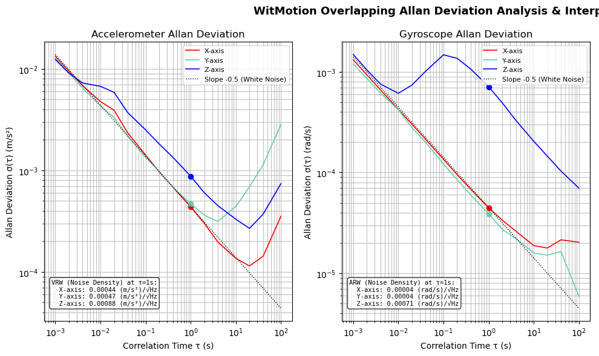
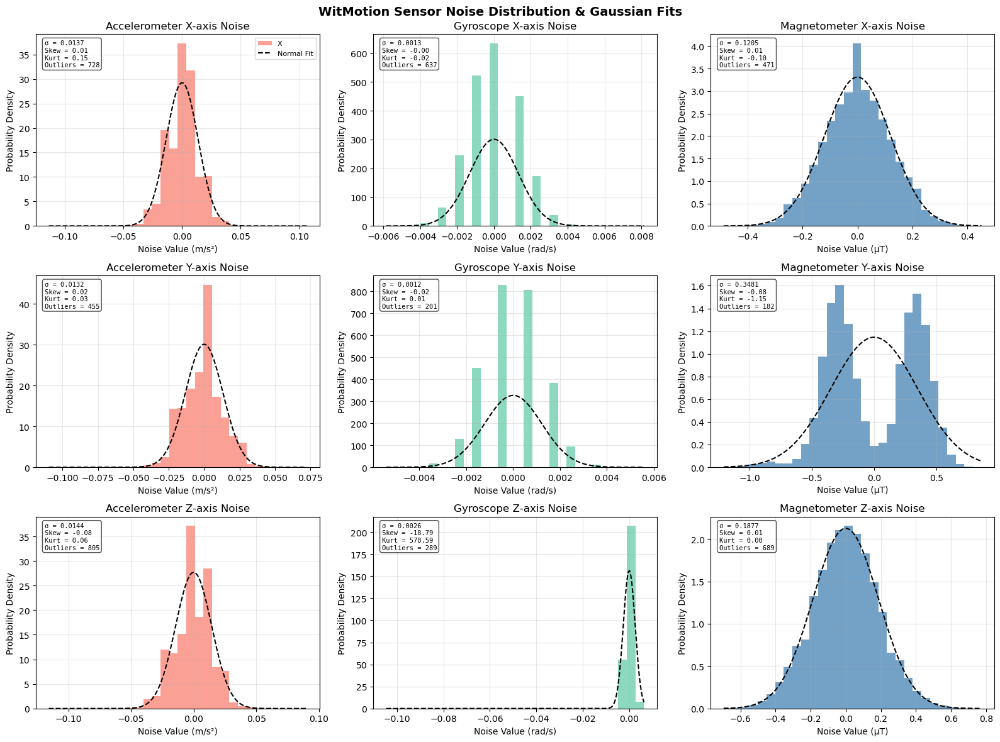
2. Pick the sample rate and avoid aliasing
Walking needs roughly 500 to 1000 Hz. The real signal should stay under about 0.4× the sample rate, otherwise fast vibration folds back in as fake slow motion, which would mess up step detection. I set the IMU's hardware low-pass filter to around 40% of the streaming rate.
3. Find a baud rate that doesn't drop data
I compared 460800 vs 921600 baud with 6 and 9 axes, streaming at 1000 Hz for 120 s each.
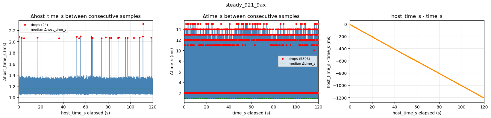
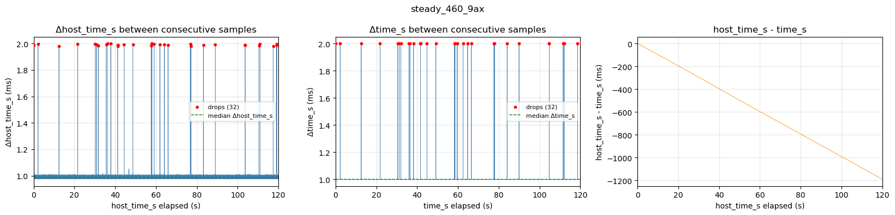
4. Keep an eye on the clocks
The IMU and the Pi each have their own clock. They drift apart slowly, so I smooth the host timestamps and check every trial before using it.
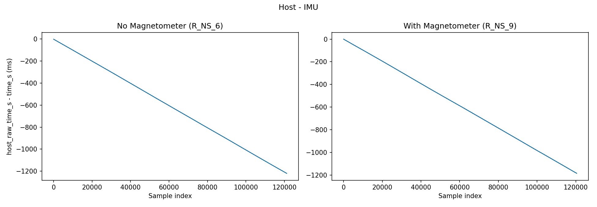
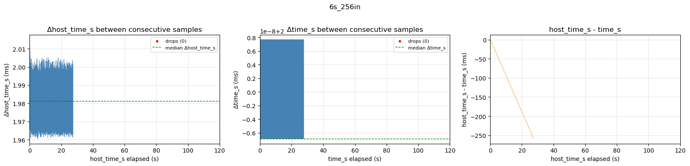
5. Then track the foot
With clean data going in, the ESKF tracked walks on a taped course: about 3 in error on a 118 in straight walk, about 6 in on a 256 in path with turns, and about 9 to 10 in of drift after a full loop.

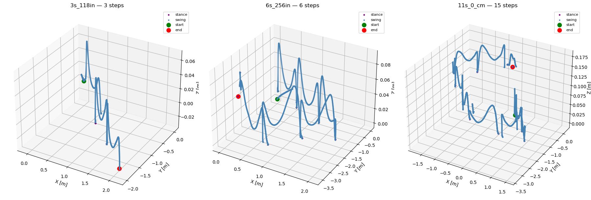
ROS2
Earlier this summer I started working through the F1TENTH course, a 1/10 scale self-driving race car, writing ROS2 nodes in Python and testing them in the F1TENTH gym simulator. So far: publisher and subscriber nodes, automatic emergency braking using time-to-collision from the LiDAR scan and odometry, wall following with a PID controller, and follow-the-gap obstacle avoidance. Next up is SLAM and pure pursuit, then moving from simulation onto the real car.